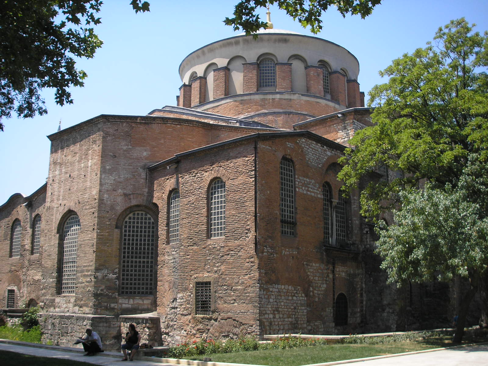

Візантійська архітектура
Перенесення Констянтином Великим резиденції римських імператорів у Візантію, що мало як наслідок розпад Римської імперії на дві частини і відокремлення Сходу від Заходу, складає одне з найважливіших подій Всесвітньої історії взагалі і історії мистецтва зокрема. Через те, що Стародавній Рим під впливом нападу варварів на Італію і розкладу всього ладу античного життя швидко втрачав свою велич, нова столиця набувала все більшого значення, і незабаром стала осередком блискучої цивілізації, яка поширилась звідси на весь Схід і далі на західні країни.
Історія
Вже з перших днів свого існування Візантія, намагаючись перевершити Рим у відношенні витонченості і розкоші, почала прикрашатись величними спорудами і витворами мистецтва, для виконання яких в це місто звідусіль з'їжджались найкращі художники. виконання яких в це місто звідусіль з'їжджались найкращі художники. Мистецтво, яке тут виникло внаслідок релігійних, політичних і побутових умов мало особливий склад, в якому до греко-римських елементів додавались східні тенденції. Досягнувши повного свого розквіту в першій половині VI століття, при Юстиніані, Візантійське мистецтво відчуло підйом до початку XIII століття і тільки після появи латинян у Константинополі почало згасати. виконання яких в це місто звідусіль з'їжджались найкращі художники. В цей довгий період воно створило багато чудових пам'яток, як у столиці, так і в областях Східної імперії, значно вплинуло на розвиток мистецтва Вірменії, України, Росії, власне Італії і далекої Франції; і в арабському, і в турецькому мистецтві відчутні візантійські мотиви. Візантія зберегла в часи Середньовіччя античні перекази і відмінні прийоми, які полегшили потім перші кроки до вивчення мистецтва епохи Відродження.
Характерні риси візантійської архітектури
Запозичивши форми від античної архітектури, візантійське зодчество поступово їх видозмінювало і протягом V століття виробило, переважно для храмів, тип споруд, який за планом і конструктивній системі істотно відрізнявся від типу давньохристиянських базилік. Головну його особливість складає використання куполу для вкриття середньої частини будівлі (центрально-купольна система). Купол був відомий ще в язичницькому Римі, так як і на Сході (Сирія), але в більшості випадків розміщувався на круглій підставі; якщо ж основа була квадратна або багатогранна, то між ним і куполом не існувало належного органічного зв'язку. Візантійці вперше вдалим чином вирішили завдання розміщення куполу над основою квадратного і взагалі чотирикутного плану за допомогою так званих вітрил. Якщо взяти паралелепіпед А і вкрити його куполом у вигляді сферичного сегменту B, то купол буде спиратись тільки чотирма точками вертикальних стін, і всередині будівлі утворюються опуклі кути, які перешкоджають враженню легкості і гармонійності споруди. Рішенням візантійських зодчих став зріз кутів паралелепіпеду таким чином, що верхні частини його стін прийняли дугоподібну форму; купол став триматись на верхівках цих чотирьох дуг і зв'язувався з нижньою частиною споруди сферичними трикутними поверхнями, які знаходяться між цими дугами і схожими на надуті знизу трикутні вітрила (звідси — назва цього архітектурного елементу). Не задовільнившись цим, для надання куполу характеру ще більшої легкості замість прямих стін нижньої будівлі почали будувати напівкруглі в плані ніші, які закінчувались вгорі, біля купола, напівсферичними поверхнями таким чином, що купол тримався на верхівках арок цих ніш і на чотирьох масивних стовбурах, що підпирають вітрила. Ця середня частина регулювала інші частини будівлі.
Рішенням візантійських зодчих став зріз кутів паралелепіпеду таким чином, що верхні частини його стін прийняли дугоподібну форму; купол став триматись на верхівках цих чотирьох дуг і зв'язувався з нижньою частиною споруди сферичними трикутними поверхнями, які знаходяться між цими дугами і схожими на надуті знизу трикутні вітрила (звідси — назва цього архітектурного елементу). Не задовільнившись цим, для надання куполу характеру ще більшої легкості замість прямих стін нижньої будівлі почали будувати напівкруглі в плані ніші, які закінчувались вгорі, біля купола, напівсферичними поверхнями таким чином, що купол тримався на верхівках арок цих ніш і на чотирьох масивних стовбурах, що підпирають вітрила. Ця середня частина регулювала інші частини будівлі. Церква Святої Ірини в Константинополі. The 6th-century church is a superb sample of the early Byzantine architecture Подібна система будівництва застосовувалась в більшості випадків в храмах, які в загальному плані являли собою з'єднання п'яти квадратів у вигляді рівнокінцевого (так званого грецького) хреста: над середнім квадратом знаходився купол, в бокових квадратах — ниші, які відкриваються в цей середній простір; квадрати, які займають проміжки між кінцівками хреста, були підрядними частинами, звичайно більш низькі, ніж сам хрест. До східної сторони храму добудовувалась напівкругла апсида для вівтаря, а до західної — Нартекс. Спочатку візантійський купол мав доволі плоску форму, пізніше — більш піднесену, але він стояв безпосередньо на арках і вітрилах; згодом між ними і куполом з'явився циліндричний барабан (тамбур), тому будівля закінчувалась вже не сегментом сфери, а піднесеною главою. Часто будівля мала окрім купола або глави над середнім простором, ще два, чотири і навіть більше куполів або глав над боковими простірами. Всередині візантійських храмів довкого середнього подкупольного простору, за виключенням вівтарної сторони, розташовувалась галерея на зразок хорів. Вона була призначена для жінок, які були присутні під час богослужіння, і тому мала назву гінекеєм. Знизу цю галерею підтримували колони, антаблемент яких був не горизонтальний, а складався з напівциркульних арок, перекинутих з колони на колону. Капітелі колон в візантійській архітектурі в більшості випадків залишились без абаки і мали оригінальну форму зрізаної чотиригранної піраміди, зверненої меншою підставою вниз і вкритою не дуже випуклою орнаментацією, мотиви якої складають акантове листя і інші офантазовані форми рослинного царства; нерідко цей орнамент був обведений вздовж ребер піраміди візерунковим бордюром. Стопи арок спирались не безпосередньо на капітелі колон, а на покладені проміжні елементи — подушки, так звані пульвани, схожі на куб зі скошеними донизу боковими гранями, також прикрашені орнаментом. Внутрішній простір не відрізнявся багатством і архітектурними деталями, проте його стіни були облицьовані знизу дорогими ґатунками мармуру, а зверху, також як і склепіння, багато прикрашались позолотою, мозаїчними зображеннями на золотому фоні або фресковим живописом. Ззовні будівля складалась з двох ярусів з довгастими вікнами з заокругленим верхом. Ці вікна іноді групувались по двоє і по троє, а частини кожної групи відділялись одна від іншої невеликою колоною, а сама група була обрамлена фальшивою аркою. Окрім вікон на стелях, для освітлення будівлі слугували вікна в куполі, у заснування, або в тамбурі глави.
Еволюція візантійської культури
Названі системи і форми візантійське мистецтво засвоїло поступово, і не застосовувало цілком без тих чи інших відступів від загального типу. Перші прояви візантійського архітектурного стилю ми бачимо в деяких храмах Равенни, а саме у соборній хрестильниці, яка була побудована приблизно у 430 р. за простим планом правильного восьмикутника; потім — у мавзолеї Галли Плацідії (тепер церква. св. Назарія і Кельсія), першому прикладі храму з хрестоподібним планом і з куполом над середнім простором (збуд. близько 450 р.), і в церкві св. Віталія (528—547 рр.), в якій чудово вирішене завдання спорудження за восьмикутним планом. Ці архітектурні пам'ятники не мають ще справжніх елементів центрально-купольної системи. Вперше риси візантійської архітектури виразно можна побачити у константинопольській церкві святих Сергія і Вакха (527—565 рр), що являє собою перехід від вищезгаданих будівель до головного, чудового пам'ятника візантійської архітектури — Храму Святої Софії, яка була споруджена Юстиніаном у 532—537 рр. в пам'ять про утихомирення бунту, під час якого цей цар майже не залишився без престолу. Головними будівниками Собору Святої Софії були Анфемій Траллський і Ісидор Мілетський. Через 20 років після урочистого освячення св. Софії землетрус пошкодив створення Анфімія і Ісідора, особливо купол; будівлю підперли контрфорсами, від яких воно втратило колишній вигляд, купол склали знову, при цьому зробили його більш високим. В такому вигляді св. Софія проіснувала до завоювання Константинополя турками (1453 р.), які Головними будівниками Собору Святої Софії були Анфемій Траллський і Ісидор Мілетський. Через 20 років після урочистого освячення св. Софії землетрус пошкодив створення Анфімія і Ісідора, особливо купол; будівлю підперли контрфорсами, від яких воно втратило колишній вигляд, купол склали знову, при цьому зробили його більш високим. В такому вигляді св. Софія проіснувала до завоювання Константинополя турками (1453 р.), які перетворили її в свою головну мечеть, вони закрили мозаїчні зображення на її стінах штукатуркою, знищивши в ній престол, вівтарну перешкоду і інші приналежності християнського культу і спотворили її зовнішній вигляд різноманітними добудовами. У 1935 році з фресок і мозаїк були зчищені шари штукатурки, які закривали їх. Таким чином на сьогодення на стінах храму можна бачити і зображення Ісуса Христа і Богоматері, і цитати з Корану на чотирьох великих щитах овальної форми. В плані собор являє собою подовжений чотирикутник (75,6 м довжини та 68,4 м ширини), який утворює три кораблі: середній — широкий, бокові — більш вузькі. Середина широкого корабля, квадратна в основі, обмежена по кутах чотирма масивними стовбами, які підпирають величезні арки, і вкрита доволі плоским куполом 30 м в діаметрі, вершина якого відстоїть на 51 м від підлоги. До цього підкупольного простору прилягають зі сходу і заходу дві величезні ніші з напівсферичним верхом: у східну нішу відкриваються своїми арками ще три менші ніші, з яких середня, яка слугує вівтарною апсидою, глибше за інші і видається з загального плану храму у вигляді півкруга; до західної великої ніші прилягають також три ніші; з них середня, являє собою не напівсферичний звід вгорі, а звичайний коробовий звід, має в собі три двері, які ведуть до прибудованих до храму внутрішніх і зовнішніх притворів (esonartex та exonartex), попереду яких колись знаходився тепер не існуюче подвір'я, обнесений галереєю з колонами; під цими арками йде ще по ярусу подібних арок, якими відкриваються до підкупольного простору влаштовані в бокових кораблях галереї гінекея, а ще вище — величезні арки, які підтримують купол, закладені прямою стіною з вікнами, які розташовані у три ряди. Окрім цих вікон, внутрішній простір храму дають рясне, хоча і дещо розсіяне освітлення 40 вікон, які оперізують підставу купола, і по п'ять вікон у великих і малих нішах.
Культурне значення Візантії
Політичний і культурний вплив Візантії впродовж Середніх віків поширився більш-менш сильно в мистецтві народів, які мали якісь контакти з нею; прийоми візантійського зодчества проникли в різні, навіть віддалені, краї тодішнього світу. Таким чином, в Італії, окрім згаданих равеннських церков, мають на собі відбиток візантійського стилю деякі храми Сицилії (собор Монреале, Палатинська капела і Марторана в Палермо, Мессинський собор), Собор Святого Марка у Венеції (освящ. у 1085 р.), церкви на остр. Торчелло та інших пунктах Адріатичного узбережжя. У Німеччині зі споруд цього стилю, які виникли у часи Карла Великого на берегах Рейну, вціліла імператорська капела при Аахенському соборі (796—804), яка являє собою доволі близьке наслідування раввенській церкві св. Віталія. У Франції, у Ліможі і сусідніх містах, ми знаходимо кілька храмів, в яких можна знайти вплив візантійства, наприклад, церква св. Фронта в Періґе. Проте ніде зодчество Візантії не дало від себе значних і тривалих нащадків, як у Вірменії, Грузії, Сербії і Київській Русі — країнах, які запозичили його звідти разом з догматами і обрядами релігії.
Див. також
- Візантійська імперія
- Замок - фортифікаційна споруда, що отримала широке розповсюдження у Візантії, звідки вона до IX століття потрапила у Західну Європу.
- Архітектура Візантійської імперії